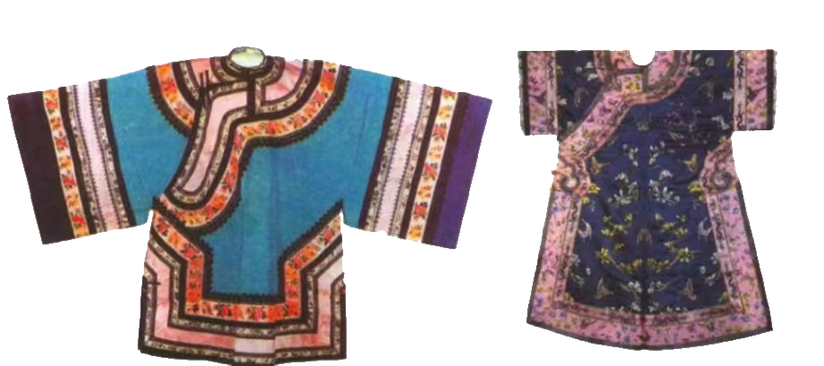

《
清代女子服饰
清代女子服饰满汉服饰特征比较鲜明。满族女子不允许穿着汉人的服饰，因此出现了满族女子穿满式服饰，汉族女子穿着汉人服饰的分化现象。清代满族女子也穿马褂，款式基本与男子相同但全身装饰纹样，同时袖型与男子马褂略有不同。女子马褂包括挽袖与舒袖两种。挽袖是袖子长于手臂穿着时向回挽起。舒袖是袖口短于手臂。女子也穿马甲（坎肩）多穿于旗袍外面。女子穿在马甲内侧的衬衣就是人们常说的旗袍也是满族女子的一般常便服。款式多为圆领、右衽、平袖且衣长及踝、一般无开衩。
清代服饰特征的历史因素
清代（17世纪前半叶至20世纪前半叶）经历了将近三个世纪。与此同时，中国服饰文化发展到近代很大程度上受到了满族服饰的影响，甚至这种影响一直延续到当代。清代统治者为了强化对中原汉族人民的统治，强制推行服装制度的改革。要求汉人留满式辫子、穿满族服装，力图通过穿满族服饰的方式来同化汉人。在清初，这一举动激化了民族矛盾，遭到了汉人的强烈抵制。为了平衡这种矛盾，明代遗臣金之俊提出“十不从”建议，即在服饰方面，根据不同场合、不同人群来判断应该穿着的服装属性。这样才缓和了满汉之间由于服饰观念不同而造成的矛盾。满族是女真人的后裔，因此满族的服饰很多都是在女真人服饰的基础上发展来的。
》